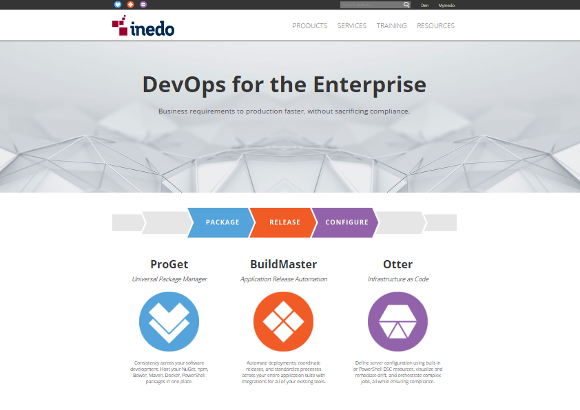

Inedo
Inedo is a developer of proccess automation tools for software developers. Our team managed their branding and marketing concerns. For their site, I architected the general structure, helped design initial mock-ups, and consulted on copy and content. Additionally, I contributed to ongoing maintenance and page creation, alongside a team of developers and designers.
- JavaScript
- KnockOut
- Graphic Design
- LESS
- CSS
- HTML